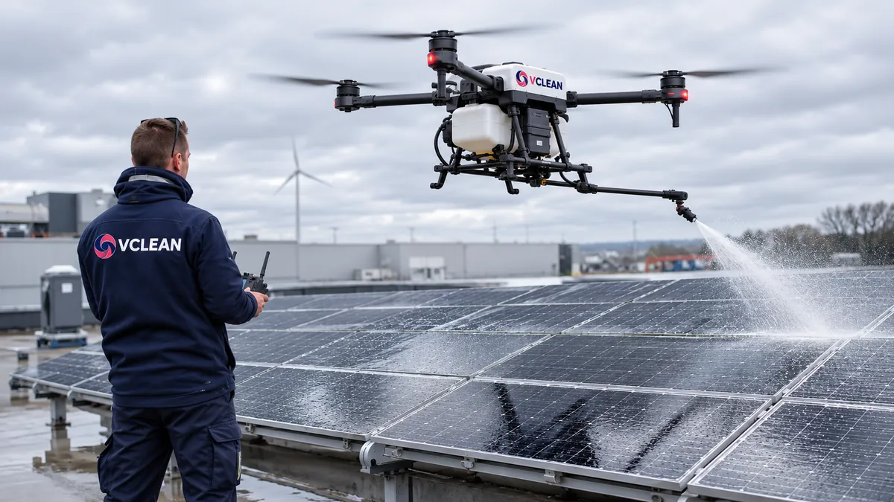

Dienst · Ramen, gevels & daken
Zonnepanelen reinigen met drones
Op grote of moeilijk bereikbare industriële daken kan een reinigingsdrone de panelen besproeien en reinigen, terwijl de piloot veilig op een vaste plek blijft. Zo moet er minder gewerkt worden op hoogte en tussen de panelen.

Wat we doen
De precieze taken leggen we samen vast. Dit is een vertrekpunt.
- Grote platte daken van magazijnen, hallen en productiesites
- Daken die moeilijk of niet veilig te betreden zijn
- Reinigen met water via een slang of sproeier aan de drone
- Visuele controle van het resultaat, met foto’s
- Uitvoering: [IN TE VULLEN: zelf of via partner, vergunning en erkende drone-operator]
Geef dit mee bij je aanvraag
Zo kunnen we sneller een voorstel maken.
- Aantal panelen of dakoppervlakte
- Ligging van het dak en de omgeving (luchtruim, obstakels)
- Wateraansluiting op of bij het dak
Ook in ramen, gevels & daken
Waar moet onze ploeg aan de slag?
Vraag een plaatsbezoek aan. Daarna krijg je een schoonmaakplan en een offerte voor je site.
Liever direct contact? Bel [IN TE VULLEN: telefoonnummer] of mail [IN TE VULLEN: e-mailadres].